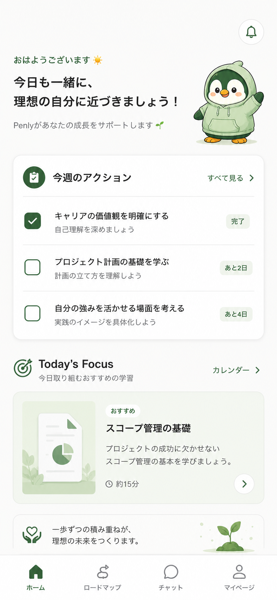

やりたいことは
ある。
何から始めればいいか、わからない。
その一歩を、一緒に踏み出す。
あなたのビジョンは、
形にできる。
こんな経験、ないですか
なぜ、ゴールが見えないのか
言語化が
難しい
「どうなりたいか」を自分の言葉にできない。頭の中にぼんやりあるのに、形にならない。
忙しくて
忘れる
仕事に追われて「考える時間」が取れない。やりたいことがあったはずなのに、いつの間にか消えている。
変わらない方が
楽
現状維持バイアス。頑張りたいのに「まあいいか」に負ける。自己実現したい気持ちと、動かない日常の葛藤。
本当は、
変わりたい
意志がないんじゃない。ゴールが見えないだけ。見えれば、人は動き出す。
なぜ、学びは続かないのか
「今日は
いいか」
毎日の小さな先延ばしが積もる。「明日やろう」が1週間、そして半年になる。
ゴールと
今日が繋がらない
「PMになりたい」のに今日やるのは「JavaScript基礎」。その意味が見えないと、やる気が消える。
進捗が
見えない
あとどれくらいでゴールに着くのかが不明。永遠にスタート地点にいる感覚。達成感がない。
迷っても
相談できない
「これで合ってる？」「方向転換すべき？」を聞ける人がいない。一人で迷って、止まる。
だから、
こう 設計 した。
対話でビジョンを明確にして、あなた専用の道筋と教材を作り、
毎日隣で歩く。
"We believe in your vision.
We believe it can take shape."
あなたのビジョンを信じている。
それは、形にできる。
Mission
ポテンシャルが価値に変換される社会をつくる。
プロダクト約束: 学びたいものを、学びたい順で、なりたい自分に最短距離で近づける。
4つの役割が「伴走」に統合される
ありたい姿を
一緒に見つける
対話でゴール・現在地を明確にする。ぼんやりした不安に輪郭を与える。
ゴールから
道筋を引く
パーソナライズされた学習ロードマップを自動生成。最大15コース。
一緒に学ぶ
教材を用意する
テキスト+音声の教材をリアルタイム生成。あなたの文脈に合った内容。
毎日、
隣にいる
チェックイン、振り返り、進捗可視化。やめても「おかえりなさい」。
この4つを一貫体験として提供するプロダクトは、まだない。
ゴールを一緒に
見つける
「なんとなく変わりたい」を、10ターンの対話で具体的なゴールに変える。
Type A: ゴールが未確定
「何を目指したいか」から一緒に探る。キャリアの棚卸し、価値観の整理を対話で。
Type B: スキルパスが不明
「PMになりたい」はある。でも何から手をつけるか見えない。その道筋を一緒に描く。
10ターンの深掘り
表面的な質問で終わらない。現在地とゴールの差分を、対話の中で明確にしていく。
ゴールから逆算した
道筋を引く
「あなたのゴール」から逆算して、必要なスキルを分解し、最適な順番で並べる。
逆算型ロードマップ
最大15コースを自動生成。「なぜこの順番なのか」も説明するので、納得して進められる。
段階的アンロック
全部見えると圧倒される。今やるべきことだけが見える設計。マイルストーンで達成を可視化。
対話でいつでも調整
「やっぱり別の方向に行きたい」も対話で対応。ロードマップは生き物。固定カリキュラムとは根本的に違う。
あなた専用の
教材を用意する
テキスト+音声の教材をリアルタイム生成。あなたの履歴と文脈を踏まえた、その場限りの教材。
Reactフックを使いこなす
Generated for you · 5 min read
なぜフックが必要か
クラスコンポーネントの`this`バインドは、初学者にとって最大の壁でした。フックは関数のままで状態を扱えるようにします。
useState の基本
あなたが先週学んだ「DOM操作」を思い出してください。あの時の手動更新を、Reactは差分計算で自動化します
リアルタイム教材生成
ストリーミング配信で待たされる感覚なく、すぐ学び始められる。
音声解説
テキストだけでなく音声でも学べる。通勤中・家事中でもインプット可能。音声対話にも対応。
文脈が残るAIチャット
教材を読んで疑問があればその場でAIに質問。先週の学習内容も覚えている。汎用AIとの決定的な違い。
毎日、隣にいる
「卒業」ではなく「進化」を設計している。離れても、戻ってきても。
ゴール変更時
「方向が変わったんですね。新しいゴールを一緒に考えましょう」— 否定しない、一緒に考える。
離脱後の復帰
罪悪感なし。「おかえりなさい」から始まる。3日でも3ヶ月でも。ストリーク保護で連続記録も守れる。
日々のサイクル
月曜: 今週のアクション提案。金曜: 振り返り。週末は休んでOK。あなたのペースで。
こんな人に使ってほしい
動けない人
変わりたい気持ちはあるが、何から手をつければいいか分からず止まっている。
続かない人
独学を始めても3日〜1週間で止まる。意志ではなく仕組みが足りない。
相談相手がいない人
迷いを率直に話せる相手がいない。コーチは高くて手が届かない。
3ステップで始める
話すだけで
ゴールが見えてくる
AIコーチとの対話で、ぼんやりした「こうなりたい」が明確なゴールに変わる。

あなた専用の
道筋ができる
ゴールから逆算したロードマップを自動生成。何を、どの順で、どのくらい。

今日やることが
もう決まっている
毎週のアクションが明確。教材も、チェックインも、伴走もここから。

今日やることが、もう決まっている
学ぶ時間に変わる。
Navilyを使うと、何が変わるか
Udemy買って3日で放置
教材は良いのに、自分のゴールとの繋がりが見えなくて開かなくなる。
YouTubeで迷子になる
おすすめに流されて2時間。「結局何を学んだんだっけ」で終わる。
ChatGPTに聞くけど忘れられる
毎回イチから説明。先週の会話を覚えていない。文脈ゼロ。
一人で迷って止まる
「これで合ってる？」を聞ける人がいない。不安で動けなくなる。
毎日5分、自分の道を進む
ゴールから逆算された「今日のアクション」があるから、迷わず始められる。
自分専用の教材で学ぶ
あなたの文脈に合った教材が自動生成。汎用コンテンツの海で溺れない。
文脈を覚えているAIコーチ
先週学んだこと、設定したゴール、全部覚えている。会話が積み上がる。
迷ったらペンリーに相談
方向転換も、不安も、何でも話せる。罪悪感なく戻れる「おかえりなさい」。
Navily — ゴールを見つけて、毎日伴走するAIコーチ
解く課題
「やりたいことはあるのに動けない」「学び始めても続かない」— 意志ではなく仕組みの問題。
ゴール設定 × 継続の二重構造
AIロール
Coach(ゴール発見) → Architect(道筋設計) → Tutor(教材生成) → Companion(毎日伴走)。この4つの統合が、Navilyだけの体験。
唯一の統合AI伴走型
初回体験
登録10秒 → 対話5分 → ロードマップ自動生成 → 今日のアクション。思いついた今日から動き出せる。
カード不要 · 無料で始められる
Your vision can take shape.
あなたのビジョンは、
形にできる。
クレジットカード不要 · AIチャット 3回/日 無料